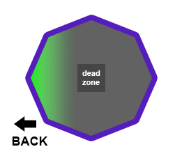
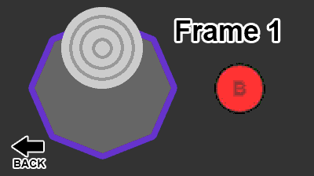

02/08/15 | Doc+Mario Extended Up-B
So today I found out about doc and marios extended upb, which I have never seen mentioned before or found myself. First let me start by saying this isn't horizontal angling, but rather gaining more vertical height then a no angle/upward angle up-b, and also a lot less horizontal distance. Heres a gfy comparing the difference.
This is doing the Up-B at the closest horizontal position possible, and the lowest vertical position possible.
Why and How?
Certain up-bs can be angled and reversed, the marios, marth and roy are the best examples. Each one has a frame in which the angle is decided by reading your control stick, and another frame where the direction (reverse or not) is decided.
Doc decides his angle on frame 3, and his direction on frame 4. So if he inputs back on frame 3, but then moves the stick anywhere but back on frame 4, he will angle away but up-b forward. This results in the extended up-b. Mario is the same concept, except he decides his angle on frame 6, and direction on frame 7. So the input is slightly delayed.
The amount you extend the Up-B is dependent on how far horizontal your stick is on the angle deciding frame. Where the back notch will result in the most extension.

There are many ways you could perform these inputs, but I think the easiest way is to hit Up+B > Quarter Circle Back > Release to Neutral really fast.

Numbers for X and Y distances
all numbers are at peak
Mario
Grounded
Extended - peak on frame 26
X-distance - 5.38
Y-distance - 43.96
Upward angled - peak on frame 24
X-distance - 17.55
Y-distance - 40.41
Airbourne
Extended - peak on frame 26
X-distance - 5.15
Y-distance - 33.66
Upward angled - peak on frame 24
X-distance - 16.72
Y-distance - 30.29
Doc
Airbourne
Extended - peak on frame 26
X-distance - 5.11
Y-distance - 38.74
Upward angled - peak on 24
X-distance - 16.68
Y-distance - 35.39
In terms of application, the difference in vertical height is small, but it's there so obviously being able to recover slightly higher will save your life occasionally. The difference in horizontal distance is pretty good, it'll help recovering on battlefield, will stop you getting pineappled on dreamland and will make it easier to get onto randall
- Schmoo
23/07/15 | Welcome to IKD!
Hey everyone, welcome to my new site I KneeData. This site aims to bring you interactive and unique learning tools to help visualise and better understand certain aspects of competitive smash.
I have launched with top 8 melee characters outofshield heatmaps, but plan to release the entire cast. Then create new types of heatmaps, such as from shielddrop, from dash, from ledge. Now that the foundation has been created, the process of making new ones is very easy but a little time consuming.
I have a few ideas for new apps but I would love for the community's input. Use the buttons on the right sidebar to send me a message, and if there is a popular idea or one that I like, I may make it.
As of now, the apps will be melee only, but if there is enough demand, I will do PM content, but bear in mind the debug tools are less extensive, so some things will be much harder to do. Sm4sh and 64 seem unlikely, especially with 4's lack of mechanic knowledge. But I am definitely not writing them off.
I will use this blog section to talk about new apps and infographs, some recent melee mechanic documentation I, or someone else has done, or just general site announcements.
Just want to briefly mention that I have a couple little ads on the side and turning off adblock would help me out with that, or if you want to support me even more, you could donate.
- Schmoo